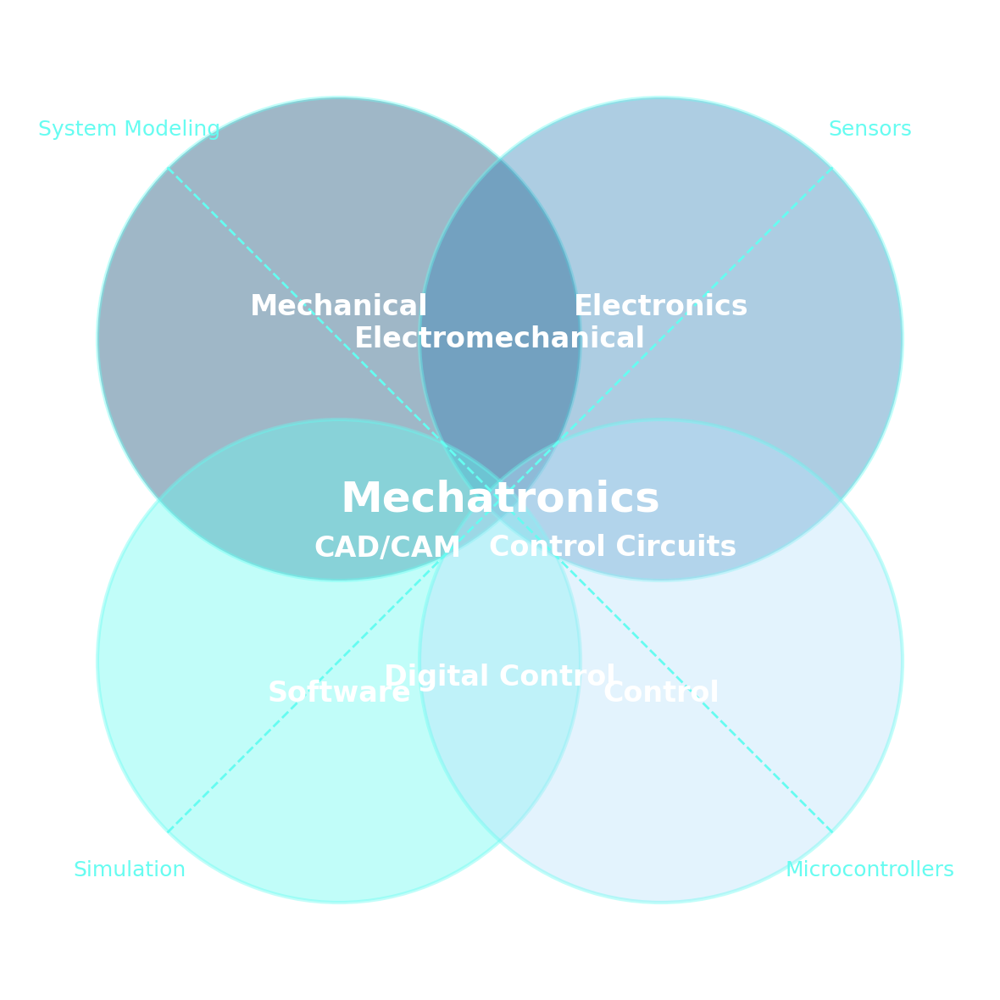
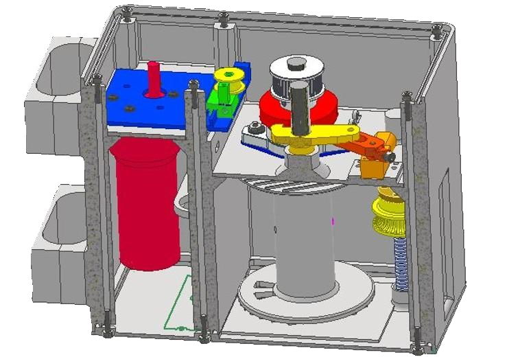
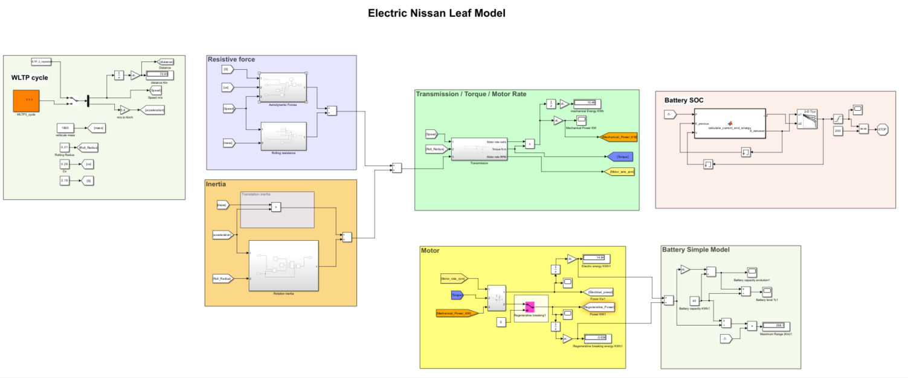

Hello, I'm Antoine and
Get in Touch
About
Passionate about technology and innovation, I have developed skills in engineering and design through my academic journey. My background in electromechanics and mechatronics allows me to approach projects with a multidisciplinary mindset.
Skills
As a future engineer in mechatronics and energy engineering, I possess a broad range of skills. Mechatronics, by its very essence, synergistically and systematically combines multiple areas of expertise, including:

Mechanic
Since my first year, I have taken numerous mechanics courses that have enabled me, through various study projects, to master component sizing, fit and tolerance calculations, creation of technical drawings, and part design using CAD.
- Autodesk Inventor
- Fusion 360
- Kissoft
- AutoCAD
- Mastercam
Electricity & Electronic
I also benefited from a solid education in electrical engineering, covering circuit theory, three‑phase voltage studies and motor operation, protection principles and neutral grounding systems, as well as an understanding of power networks, all reinforced through hands‑on laboratory work.
Automation & Control
I deepened my automation skills by tackling industrial PLC and robot programming as well as process control, then applied this expertise in practical Arduino‑based projects. Simultaneously, I developed applications in Python and MATLAB.
- TIA Portal
- ABB RobotStudio
- Arduino IDE
- MATLAB
- Python
- VS Code
Simulation
I regularly created system models in Simulink to analyze their performance and develop digital twins.
- MATLAB / Simulink
- PLECS
Energy
During my Master’s program, I undertook numerous projects on diverse energy systems: heat pumps, wind turbines, electric vehicle simulation, solar energy exploitation, and electro‑thermal building modeling.
Transverse
During my studies, I also completed courses in engineering ethics, management, and research project leadership, as well as English training certified at Wallangues level B2. For more details, you can review my academic background.
Projects

Camera calibration applied to a laser cutter with MATLAB

Automation of a palletizing station with TIA Portal

Automated Fender Buoy Deployment

Design and build of a laser CO2 cutter

Energy Monitoring Analysis
